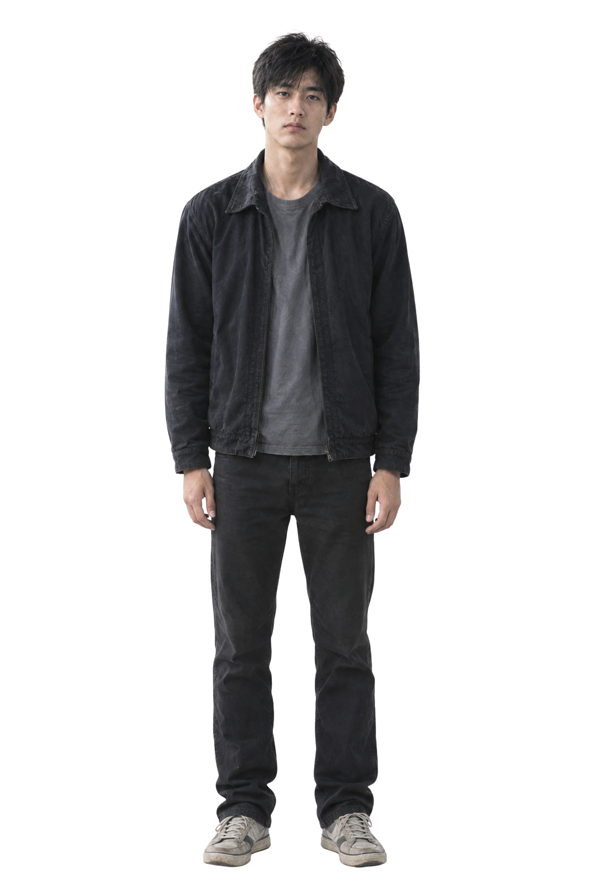

🐺 陈知白｜影子 → 天狼
17岁 · 高二 · 8号中场｜马来西亚华裔
拥有特殊天赋「结构视角」，能够预判场上短时间内的跑动走向。这份能力会带来记忆碎片化的代价，一部分代价由哥哥替他承担。
身形清瘦，一缕发丝轻遮住右眼。故事前期很少露出完整正脸，常穿着偏大的深蓝色8号球衣。
性格内敛寡言，习惯用行动代替言语。洞察力出众，但不被身边人理解，慢慢成长为队伍里值得信赖的存在，被远方的神秘势力留意。
足球，看的不是眼前，是结构。
短片 · 看见结构的人
眼睛会骗人。 结构不会。
17岁 · 高二 · 8号中场｜马来西亚华裔
拥有特殊天赋「结构视角」，能够预判场上短时间内的跑动走向。这份能力会带来记忆碎片化的代价，一部分代价由哥哥替他承担。
身形清瘦，一缕发丝轻遮住右眼。故事前期很少露出完整正脸，常穿着偏大的深蓝色8号球衣。
性格内敛寡言，习惯用行动代替言语。洞察力出众，但不被身边人理解，慢慢成长为队伍里值得信赖的存在，被远方的神秘势力留意。
足球，看的不是眼前，是结构。

16岁 · 高二文商班｜校刊摄影、图书馆管理员
转学生，随身带着父亲遗留的胶片相机。悄悄写下关心的字条，旧胶卷里藏着关于陈知夜的往事。
齐肩黑发束成低马尾，发尾微卷，相机常常挂在颈间。故事前期，她的形象总带着一层朦胧感。
外表开朗，内心细腻克制。不擅长直白表达心意，习惯用镜头默默观察记录，把情绪藏在安静的陪伴之中。
又没好好吃饭？球踢得那么好，饭也要好好吃。——你的场外观众

20岁｜华裔 · 陈知白亲哥哥
也曾觉醒过结构视角，主动选择放弃天赋，自愿承受对应的代价。拥有属于自己的生活轨迹，将在故事第七章正式登场。
眉眼和弟弟有相似轮廓，但神态自成气质。短发完全露出眉眼，眼底带着挥之不去的倦意。日常多穿着朴素的旧衬衫与深色外套，气质沉静疏离。
性格温柔隐忍，长久承受身体带来的损耗；悲伤与苦楚大多收敛于神态之间，很少有激烈崩溃的时刻，是揭开天赋背后代价真相的关键人物。
你踢你的。我看得见。

46岁｜马来裔 · 昔日天赋持有者
曾经同样拥有结构视角，被神秘势力关注。伤病终结了他的球员生涯之后，回到华文独立中学执教，默默观察、试探，守护着陈知白。
日晒深棕肤色，短发夹杂银丝。常穿深蓝色Polo，胸前银色口哨；常常双臂交叉抱胸，安静站在场边注视赛场。
冷静内敛，看透赛场与人的内心，不会轻易摊开所有秘密，愿意留给少年自我探寻与成长的空间，知晓许多关于天赋与那股神秘势力的往事。
看来……终于还是来了。
故事发生在雨季的吉隆坡华文独立中学。雨后足球场，积水看台与草木，处处笼罩薄雾。
少年陈知白拥有推演赛场走向的特殊天赋，这份能力伴随沉重代价。哥哥为他分担一部分痛苦。苏念悄悄观察记录。曾经拥有天赋的教练在暗处守护少年。
一股神秘势力只在远方进行窥探。本篇章冲突停留在暗流与对峙，不出现直白的暴力交锋，整个故事交织亲情、遗憾、隐忍的少年成长。
第一视角，纯足球贴地破水，水花向两侧炸开。1秒后柔和叠化，镜头从陈知白背后近距离开始，画面只看到深蓝8号球衣的号码8。镜头缓慢向后拉远，逐渐露出陈知白完整背影。始终背对镜头，完全看不到正脸、侧脸、眼睛，不回头，不转身。远处队友射门庆祝，红色客队球员回防，全部虚化。
旁白：没人知道，我看见了什么。
陈知白第一人称主观视角，平视微向下，缓慢扫描雨后整片球场。一颗带水珠足球位于画面中下中轴线。深蓝主队球员、红色客队球员交错跑动拉扯。多条极细半透淡白色推演分支轨迹线逐段柔和浮现。随场上球员实际行动，其中一条逐渐清晰，其余分支自然淡化消失。线条贴合草地与白色场地线。属于主角内心心理可视化，现实其他人完全看不见。无发光、无箭头、无游戏UI，完全贴合实景地面，不悬浮。远景边缘可见场边替补席、教练区与看台模糊人影。
旁白：球场上，所有路线，我看得见。
85mm长焦锁定场边主队主教练 Ariff Aimran，双臂交叉静立，深蓝Polo，银色口哨。目光锐利沉静，穿透薄雾锁定场内陈知白。身旁助理教练，身后主队替补，远处客队教练组与替补，看台零星观众。画面色温单向平缓从冷青灰过渡为暖橙夕照，积水表面反射橙金色晚霞柔光。
旁白：无。
队友高速前插，面对客队荧光橙门将推射破门。球网鼓起，草屑与积水飞溅。看台边缘少量观众、主队替补席短暂起身。欢呼声炸开。00:15画面柔和叠化变白0.3秒，所有声音突然掐断。
旁白：无。
陈知白站在雨后球场中央，低头茫然，像刚忘记什么。不露正脸，只露侧脸轮廓或低头。深蓝8号球衣，身形单薄瘦小。积水倒映孤独身影。远处队友庆祝，全部虚化。
旁白：但每用一次，就少记得一件事。
陈知白低头看自己膝盖，短暂停顿。不露正脸，只拍手部或膝盖局部。积水倒影中，他的身影微微晃动。
旁白：无。
前景：陈知白站在球场中央，低头茫然，不露正脸。背景：远处看台边，苏念举着胶片相机对准他，按下快门。脸完全虚化，五官不可辨，只有朦胧轮廓。齐肩黑发低马尾，发尾微卷，袖口墨迹，脖子挂老式胶片相机。她按下快门后，放下相机，用肉眼看他。闪光灯微微一亮，随即消失。画面仅2秒，短促柔和叠化进出。
旁白：无。
0.3秒短促闪回。纸条特写：潮湿微卷纸条，清秀手写文字：又没好好吃饭？球踢得那么好，饭也要好好吃。——你的场外观众。句末手绘小足球、小饭团、小星星。
旁白：无。
陈知夜站在雨后球场场外，远景背影或侧影。身形比陈知白高，骨架略宽，但不壮硕。不穿足球球衣、足球球鞋，不遮右眼，不露正脸。穿旧纯色衬衫、深色休闲外套、深色长裤、简单旧鞋。他安静站着，远远看着球场方向，神情温柔疲惫。手里旧表微露，或口袋露出纸条一角。前景可有陈知白背影，虚化。
旁白：但有一个人，替我记着。
画面缓缓向纯黑叠化。变暗过程中淡入白色静态字幕：我记得你就够了。画面完全变黑后，留白0.5秒。缓慢淡入片名：沉默之狼。远处模糊喊声：“天狼！”
旁白：无。
这里预留为隐藏细节、幕后线索或额外互动内容区域。
彩蛋区域待补充